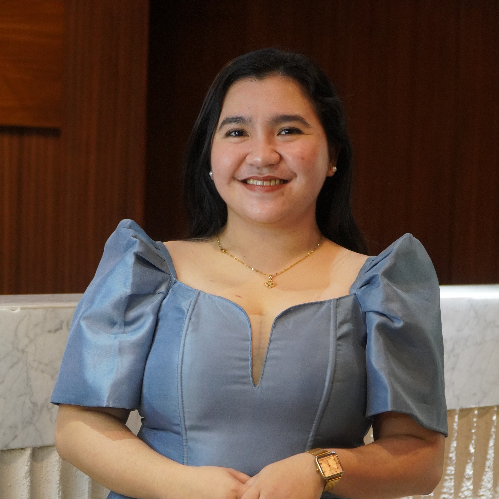

Celebrating her 2nd work anniversary
Your dedication, passion, and guidance have been a true inspiration to the team. Thank you for all your hard work!
Today, we celebrate two wonderful years of your dedication, warmth, and genuine service as a public servant.
Your calm yet cheerful presence makes even the most challenging tasks feel lighter. Whether as a team lead or a team member, you always carry yourself with positivity, grace, and professionalism.
We are truly grateful for your dedication—not just to your work, but to the people you work with. Thank you for sharing your life, service, energy, and your heart with us.
We are grateful to celebrate this milestone with you, Ms. Merielle!